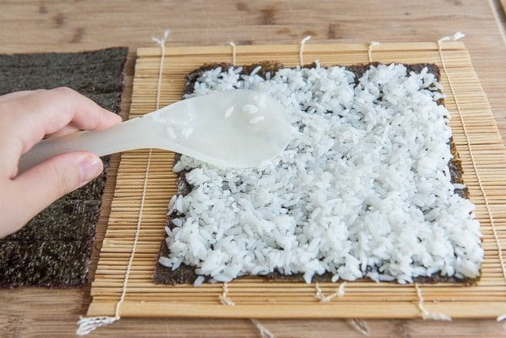

Homemade Sushi
Enjoy making Sushi

Ingredients
- Japanese rice
- Salmon
- Cucumber
- Seaweed

- Avocado
- Cream cheese (if you wish)
Procedure
- The one on the left below is thick and perfect for rolling. The one on the right is too flimsy. Make sure
you get seaweed specific for making sushi, which it should state on the package. It will sometimes say
“nori” on the package.

- If the seaweed you’ve bought seems to have one side that’s shinier than the other, have the shiny side
facing the rolling surface so that it’s on the outside of the roll.
Then spread your sheet of nori with a layer of prepared sushi rice, and flatten the top of the rice gently
with a paddle, but do not smash the rice. And make sure not to neglect the edges of the nori sheet!

- Then to cover details in-depth in that post, but recommended a short-grain rice, as well as a white rice,
instead of brown. Long-grain rice is usually not sticky rice, and that is an important factor for helping
hold the rolls shut. I also season the rice with a sushi vinegar that has a touch of salt and sugar in it.
You may also add sesame seeds, if you wish.
Also know that the rice will be easiest to spread when it’s slightly warm or at room temperature, so prepare
the timing right in advance for when you want to eat.
- A piece of salmon. It was a 1/2lb piece, and gave us enough fish for about 6 rolls, plus some snacking.

- First, cut straight down through the filet, then cut that piece in half through the center so you have a
small strip. Make sure you’re using a sharp knife and gliding with one stroke, to get a nice clean cut.

- Place your desired ingredients onto the sushi rice. I got salmon, avocado, and cream cheese

- Roll it up tightly, using a bamboo mat. It’s a specific kitchen item, but you can get a decent one for less
than $2 on Amazon or at an Asian market.
If you don’t have one, you can sort of use parchment paper or plastic wrap, but you won’t be able to wrap it
as tightly.

- Then use your sharpest knife to cut the sushi salmon roll into pieces. I don’t find it particularly better
to use a serrated knife. Just make sure to use a sharp one!

- Now you’re ready to eat the sushi rolls with some soy sauce, pickled ginger, and wasabi paste, as desired!